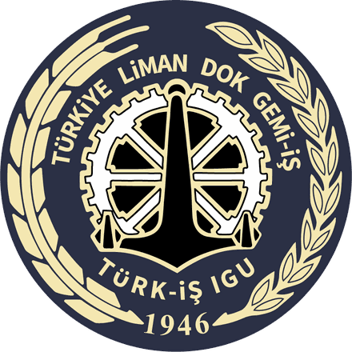

Özet
Örnek veri gösteriliyor. Firebase ayarları girildiğinde burada gerçek cevaplar görünür.

Türkiye Liman, Dok, Gemi-İş Sendikası
Firebase ayarları henüz girilmedi. Paneli örnek veriyle inceleyebilirsiniz; bu tarayıcıdan anketi doldurursanız o cevaplar da burada görünür.
Bağlanıyor…